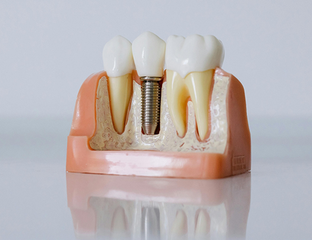
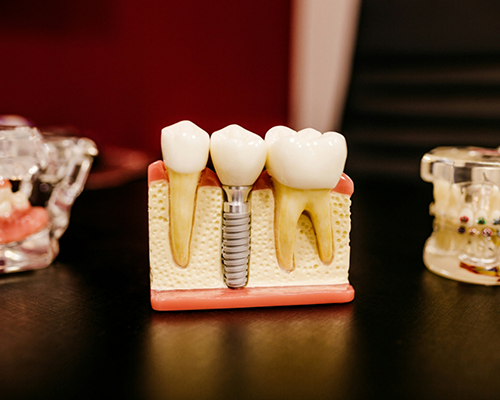
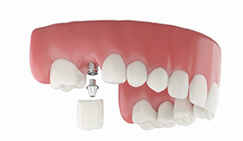
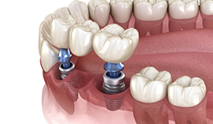
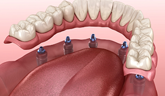
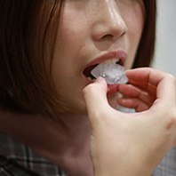
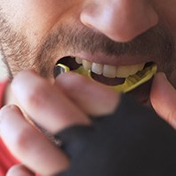
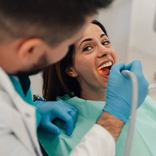

Dental Implants Hays
The Leading-Edge Answer to Tooth Loss
Dental implants have been the go-to tooth replacement option for a while now, as this treatment uses cutting-edge technology and techniques to offer patients results that look and feel completely natural. Our team at Lifetime Dental Care offers everything from mini dental implants and All-on-X to fixed and removable implant dentures. To learn more about how we can give your smile a second chance, including whether you’re a good candidate for dental implants in Hays, call our office to schedule an appointment today!
Why Choose Lifetime Dental Care for Dental Implants?
- In-House Dental Implant Placement & Restoration
- Fixed & Removable Implant Denture Options
- Compassionate Team Serving Hays Since 2002
What Are Dental Implants?

Dental implants are small titanium or ceramic posts that are shaped like screws and surgically placed within the jawbone. They naturally fuse with the jawbone to offer any type of dental restoration, like a free-standing crown, bridge or denture, a strong and stable foundation to be attached to. This is the main distinguishing factor of this tooth replacement option from traditional ones, leading to results that function just as naturally as they look.
The 4-Step Dental Implant Process

- Initial Assessment: At your initial appointment, our dentists will complete a comprehensive dental exam and take digital X-rays to help determine whether you’re a good candidate for implants. If so, we will begin planning your treatment right away and answer any questions you may have.
- Implant Placement: If you require any preparatory treatments, such as a bone or gum graft, this will be completed after your appointment. Then, we will place your dental implant posts within your jaw.
- Healing & Recovery: Following your surgery, your healing and osseointegration period (when your implants fuse with your jawbone) will take place over three to six months. This will ensure stability as well as a natural feel.
- Restoration Placement: Lastly, our team will attach your customized dental crown, bridge, or denture to your implant posts to complete your smile.
Benefits of Dental Implants
Dental implants in Hays offer a wide range of life-changing benefits. Our team will be happy to discuss more of the advantages of choosing implants with you at your appointment, but for now, here are some of the main ones to consider:
Day-to-Day Benefits
Let’s start with the benefits of dental implants that you’ll probably notice first:
- They Look and Feel Natural – Not only are dental implants secured to your jawbone, but the restoration that is placed on top is custom-made just for you. As a result, you won’t have to worry about them feeling bulky or drawing unwanted attention to your smile.
- They Can Restore the Strength of Your Bite – Dental implants can restore 80% of your original bite power. That means that you won’t be limited to plain yogurt, applesauce, and other soft foods. Instead, you can enjoy all of your favorites again!
- They Make Enunciating Clearly Easier – Unlike other tooth-replacement options, dental implants don’t rest against your gums. So, you won’t have to worry about unexpected slipping or shifting while you chew, laugh, or speak.
Health Benefits
Additionally, rebuilding your smile with dental implants can have a positive impact on your oral and overall health. Here are a few examples:
- They Help Preserve Your Jawbone – Since dental implants are inserted directly into your jawbone, it gets stimulated when you chew. This, in turn, helps prevent bone loss and maintain your youthful face shape.
- The Existing Teeth Don’t Need to Be Altered – With dental bridges, the teeth surrounding the gap need to be altered, even if they are healthy. That’s not the case with dental implants since they are self-supporting.
- They Prevent Dental Drift – Even one missing tooth can throw off the entire alignment of your bite. With dental implants, we can fill the open spaces in your smile, preventing the surrounding teeth from shifting out of place in the process.
Long-Term Benefits
This state-of-the-art tooth-replacement solution is also widely loved because of the following long-term benefits:
- Longevity – While other solutions, like dentures, can last for 5-15 years, dental implants can last for 30 years or longer. The key is incorporating healthy habits into your routine, starting with brushing your teeth for two full minutes each morning and evening.
- High Success Rate – When placed by a skilled and experienced implant dentist in Hays, dental implants have an impressive success rate of over 95%.
- Easy Maintenance – Fortunately, keeping your dental implants in pristine condition doesn’t require expensive cleaning products and a cumbersome oral hygiene regimen. Just use the same best practices that you use for your natural teeth, like scheduling a dental cleaning twice a year.
Who Dental Implants Can Help
Many patients are surprised to hear just how versatile dental implants are. They can help replace any number of missing teeth, whether you’re looking to completely rehabilitate your entire smile or fill in a gap left by a single tooth.
Missing One Tooth

To restore a single missing tooth, our skilled implant dentist will surgically place one dental implant post within the jawbone. After osseointegration and healing has taken place, we will restore the implant post with a free-standing dental crown that’s customized to match your surrounding teeth for a natural appearance.
Missing Multiple Teeth

Instead of having to alter the natural structure of your existing teeth to receive a dental bridge, our team can secure two to three dental implants in an area left by two or more consecutive missing teeth. Once the implants have fused with the jawbone, we can secure a dental bridge to them to allow you to enjoy a whole set of teeth once again.
Missing All Teeth

We offer both fixed and removable implant dentures, as well as All-on-X dental implants to replace entire rows of missing teeth. Unlike traditional dentures, these second chance teeth won’t slip or shift when you speak or eat, as they’ll be securely attached to posts that are fused with your jawbone, just like your natural teeth.
Learn More About All-on-X Dental Implants
Maintaining & Caring for Your Dental Implants
Dental implants in Hays are built to last a lifetime—but only if you take care of them. Fortunately, dental implant care is simple and fits easily into the routines you likely already have. Click below to find five practices that will protect your implants, so they stay strong and healthy for decades to come.
Make Oral Hygiene a Priority
Implants can't get cavities, but the gum tissue and bone surrounding them can still be damaged by bacteria. So, brush at least twice a day with a soft-bristled toothbrush and floss before bed, paying close attention to the gumline around each implant. If you’re not a fan of traditional floss, a water flosser can also be a great investment. Remember: Clean implants are healthy implants!
Eat a Healthy Diet
What you eat can have a direct effect on the longevity of your new enhancements. Try to watch your nutrition closely, checking ingredient labels for the vitamins and minerals your smile needs, like calcium and Vitamin D.
And while implants restore much of your bite strength, it's still best to avoid hard or overly chewy foods. Crusty bread, tough cuts of meat, and hard candy can stress or chip your restorations over time.
Break Bad Habits

Certain habits put unnecessary strain on your implants and the surrounding structures. Smoking and vaping are some of the most damaging—they restrict blood flow to your gums, slow healing, and significantly increase the risk of implant failure.
Nail biting, chewing on ice or pens, and using your teeth as tools can also cause unpredictable stress on your restoration. Breaking these habits, or at least managing them well, is one of the best things you can do for your long-term dental implant care.
Protect Your Dental Implants

If you play contact sports or grind your teeth at night, protecting your implants is critical. A custom mouthguard can absorb impacts during any athletic activity, while a nightguard prevents the damage bruxism can cause over time. Whether you’re out on the field or asleep in bed, your teeth deserve all the protection they can get.
Schedule Regular Dental Checkups

Even the most diligent home care routine can't replace professional treatment and guidance. Regular preventive dentistry visits give our team the chance to check your implants, clean areas that are difficult to reach at home, and catch any early signs of trouble. Most patients do well with visits every six months, but depending on your situation, our team may recommend a few extra appointments just in case.
Dental Implant FAQs
What problems do dental implants solve?
Dental implants solve a variety of problems, from the aesthetic appearance of your smile to functional concerns, ill-fitting or uncomfortable dentures, or decaying dental bridges.
Am I a candidate for dental implants?
In order to be a candidate for dental implants, you must be in good oral health. You will need to have enough bone density and healthy gum tissue to support your implant and ensure the long-term success of the treatment.
During your implant appointment, our dentists will discuss several factors with you to determine if you are a candidate. These factors may include:
- Any existing bridges or dentures
- The length of time your teeth have been missing
- Any pre-existing health conditions, including periodontal (gum) disease
- The quality and density of your bone tissue
- Your tobacco use
What types of dental implants are available?
There are many types of dental implants available. You can receive implants for a single tooth or for multiple teeth. All-on-X dentures, also known as second chance teeth, are a popular and cost-effective option, as they offer a permanent, stable, and comfortable restoration for multiple teeth without incurring the cost of replacing an entire dental arch with implants. Mini dental implants are also available.
How much do dental implants cost?
The cost of your implants will depend on your dental needs. During your appointment, our dentists will evaluate multiple factors, including:
- How many teeth you need to replace
- If you require a sinus lift or other bone grafting treatment to replace lost bone tissue
- If you have periodontal disease
- If you need an extraction
- What type of procedure you would be receiving
We will provide you with a treatment plan after your appointment. Our office offers many financial options to help you receive the care you need.
Do dental implants look natural?
Yes. Dental implants are the closest match to your natural teeth. In some ways, they are an improvement on your natural teeth because they do not decay. Implants are designed as full replacements for the structure of your teeth, from roots to crown, and look and feel completely lifelike.